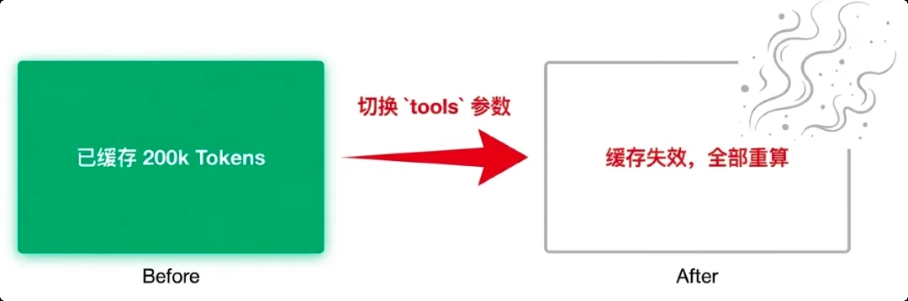

架構層：KV Cache 的注意事項
在商業化產品的降本增效中，KV Cache 是最被低估的技術點之一。命中快取和沒命中，最高差 90% 的成本——但裡面有幾個隱形的坑，不說你可能不知道。
大模型的本質是「Token 推 Token」：它不關心你問的是什麼問題，只關心前文是什麼。這意味著——如果兩次請求的前綴相同，模型其實在重複計算同樣的內容。KV Cache 就是把算過的中間結果存下來，下次遇到相同前綴直接複用：用廉價的儲存換昂貴的即時計算，「空間換時間」。
舉個例子：你問「2 + 4 = ?」，它算出 6。再問「3 + 4 = ?」，前綴變了，只能從頭算。但如果問的是「2 + 4 + 1 = ?」——前綴「2 + 4」沒變，模型直接從 6 開始算出 7。只要前綴不變，快取就能命中。DeepSeek、Qwen、智譜都支援這個能力（回看第 3 節報價表：快取價只有標準價的 1/5），這是作者挑選大模型 API 時必看的一項。
上一次請求已經快取了完整前綴。點下面三種「這一次的請求」，看命中（綠）和重算（紅）的部分。
看起來省 Token，實際是大坑
有些產品為了極致省錢，根據使用者意圖動態掛載工具：問天氣掛 WeatherTool，閒聊就不掛。問題出在大模型後端的模板邏輯——以 Qwen 3 為例，只要請求帶了 tools 參數，伺服器就會在 System Prompt 後面插入一段工具說明；如果你沒寫 System Prompt，模板還會自動幫你加一個再插。工具狀態一變（從有到無、從 A 換成 B），Prompt 頭部前綴就變了，之前快取的幾十萬 Token 瞬間灰飛煙滅。

推薦操作：System Prompt 保持不變 + 不用 tools 欄位；或者寧可浪費點 Token，把全量工具定義一直掛著，也要保住快取命中。System Prompt 的穩定性，比省那點 Token 重要得多。
多輪對話和長文字場景，很多產品用「滑動視窗」處理超長歷史——只保留最近 N 輪，舊的直接丟。這是偷懶，而且會出問題。滑動視窗的本質是 FIFO 佇列：每滾動一次，前綴就變一次，快取永遠命不中。
作者的產品「伴寫」（用前文生成後文）早期就是固定 800 字滾動視窗，又貴又容易「失憶」。後來改成章節快取：AI 生成時識別到話題轉換（場景切換、新章節）就插入分隔標記，系統據此判斷哪些內容壓縮成摘要、哪些完整保留——與其讓 AI 自己有失真壓縮，不如讓前綴儘量穩定，命中快取。
| 指標 | 舊方案（滑動視窗） | 新方案（章節快取） |
|---|---|---|
| KV Cache 命中率 | ~10%（前綴總在變） | ~80%（前綴穩定） |
| 邏輯連貫性 | 差（經常失憶） | 好（摘要 + 完整章節） |
| Token 成本 | 高（重複計算） | 低（快取複用） |
| 問題 | 設計決策 |
|---|---|
| 哪些資訊必須「恆久保留」？ | 放入 Stable 區，作為快取前綴 |
| 哪些資訊可以「壓縮存檔」？ | 用摘要替代原文，控制視窗大小 |
| 哪些資訊需要「按需載入」？ | 按章節 / 話題切分，動態掛載 |
| 如何識別「可壓縮邊界」？ | 設計分隔符機制，讓 AI 標記話題轉換點 |
字首不變，快取命中，最高省 90%。選 API 時「支不支援上下文快取」是必看項。
別動態切換 tools：工具狀態一變，模板重寫 System Prompt，快取全打穿。寧可全量掛著。
滑動視窗是快取殺手：用「Stable 前綴 + 摘要存檔 + 章節掛載」代替，命中率 10% → 80%。
內容來源：整理自作者團隊內部分享《AI Token 降本增效策略分享》實戰篇「03｜架構層」。DeepSeek 的硬碟快取定價見官方公告；「Token 推 Token」的原理複習大模型原理 · Base 模型。